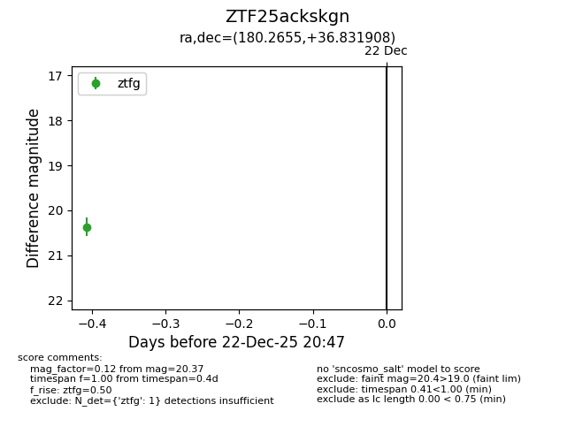
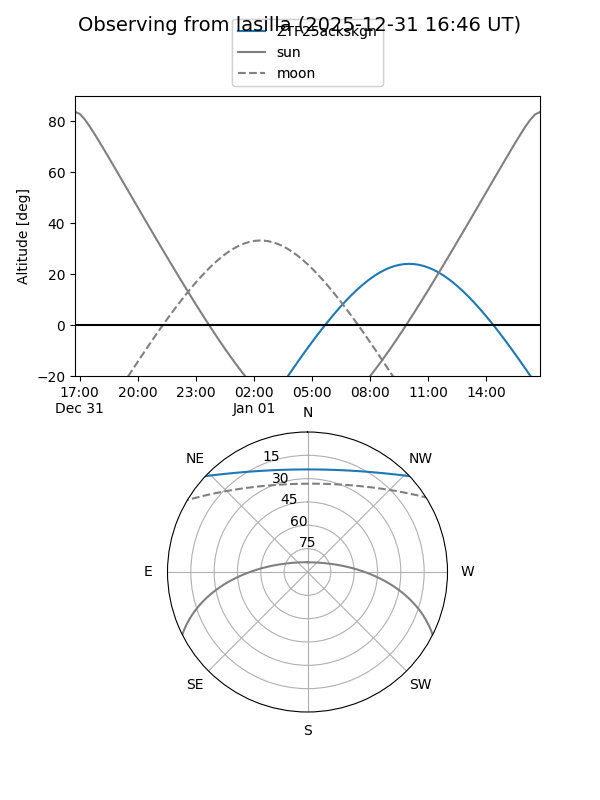
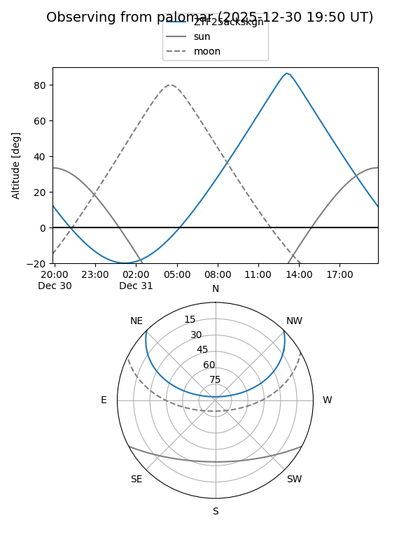

ZTF25ackskgn
Target ZTF25ackskgn at 2025-12-22 20:48
Aliases and brokers:
FINK: fink-portal.org/ZTF25ackskgn
Lasair: lasair-ztf.lsst.ac.uk/objects/ZTF25ackskgn
ALeRCE: alerce.online/object/ZTF25ackskgn
alt names
ZTF25ackskgn (ztf,fink_ztf)
Coordinates:
equatorial (ra, dec) = 180.2655,+36.83191
equatorial (HMS+DMS) = 12:01:03.71,+36:49:54.87
galactic (l, b) = (167.4737,+75.59314)
Flags:
Photometry:
last ztfg=20.37
1 ztfg detections
Lightcurve

Visibility


Additional plots